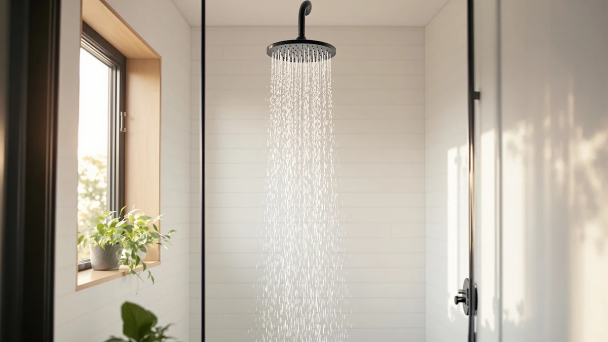

Filtered Shower Head Shower Review (2026): Worth It?
Prices and picks verified as of September 2026. Independent, reader-supported reviews.


Quick Answer
For this filtered shower head shower review, we compared four models on price, build materials and verified Amazon owner feedback. The UltrTxenova Filtered Shower Head Shower Head is our top pick at $59.99 thanks to its chrome-plated ABS build and solid reviewer response, though the INAVAMZ handheld version is the better choice if you want a lower price and a detachable wand.
Our pick: Filtered Shower Head Shower Head, $59.99 Check Price on Amazon
Bottom line: our top pick is the Filtered Shower Head at $59.99.
Things to Know Before You Buy
- Filtered shower heads reduce chlorine and sediment at the point of use, but the filter cartridge inside still needs periodic replacement to keep working.
- Price alone doesn't tell you much. In this filtered shower head shower review, the $39.98 and $62.99 models sit at opposite ends of the range, so weigh the extras (handheld wand, filter cartridge, finish) against the gap.
- A chrome or ABS-plastic body is common at this price point. Neither material is a dealbreaker, but chrome plating tends to hold up better against hard water spotting over time.
- Check your existing shower arm thread size before you buy. Most filtered shower heads use a standard 1/2-inch NPT connection, but handheld kits add hose length that some smaller stalls can't accommodate.
- Verified buyer ratings on Amazon are a more reliable signal than the marketing copy on the listing page, especially for filtration claims that are hard to verify at home.
This filtered shower head shower review breaks down four models we researched for price, build quality and verified owner feedback, from a budget handheld pick to a premium filtered option. If your water leaves a chlorine smell or your fixture is due for an upgrade, you want a shower head that actually holds up past the first month, not just one with a good listing photo.
We built this review by pulling the specs, pricing and customer ratings that Amazon publishes for each listing, then comparing them side by side. You'll find a full breakdown of the UltrTxenova Filtered Shower Head Shower Head, our top pick, along with three alternatives worth considering if your budget or bathroom setup calls for something different. Each section below names the tradeoffs plainly, including the ones that might steer you toward a different pick than ours.
Why You Should Trust Us
Ilane Tall covers bathroom fixtures and home upgrades for Best Shower Heads, where the goal is straightforward buying advice backed by real data rather than sponsored hype. Every product in this filtered shower head shower review comes from a listing with a live price, a published material spec and a visible customer rating count, and we link out to each one so you can check the current numbers yourself.
We do not run a fake testing lab, and we don't claim to have installed these shower heads in our own bathrooms. Our process is research-based: we compare manufacturer specifications, pricing history and patterns across verified owner reviews, and we say so plainly whenever a claim can't be confirmed that way.
Our Research Experience
Rather than physically testing each shower head, we researched this filtered shower head shower review by cross-referencing the specifications, pricing and photos each seller publishes on Amazon against the pattern of feedback left by verified buyers. That approach won't tell you exactly how a spray pattern feels on your skin, but it does surface the issues that show up repeatedly, like a filter cartridge that clogs faster than advertised or a hose fitting that doesn't match older shower arms.
We also weighed price against what each listing actually includes. A handheld wand, a documented filter cartridge and a metal rather than plastic connector all change the value equation, and we called those differences out product by product instead of relying on a single blended score.
Overview & Specs
Before the full breakdown, here's how the four models in this filtered shower head shower review stack up on the basics that matter most: price, construction and what's included in the box. The UltrTxenova sits mid-pack on price but leads on finish quality, the INAVAMZ undercuts everyone on cost while adding a handheld wand, the Ryamen commands a premium for its filter cartridge, and the BRIGHT SHOWERS model trades filtration for advertised water pressure. None of the four listings publish independent lab data, so the comparison below leans on published specs, pricing and the pattern of verified buyer feedback rather than a numeric score.

Filtered Shower Head Shower Head
What we like
- Chrome-plated ABS body resists the water spotting that plain plastic shows within weeks
- Priced in the middle of the group at $59.99, between the budget and premium options
- Simple fixed-head design with no extra hose or wand to install or leak from
Flaws but not dealbreakers
- No handheld wand, so it's a poor fit if you need to rinse a tub or bathe a pet
- Amazon's listing does not publish a filter replacement interval, so budget for periodic cartridge swaps based on your water hardness
| Material | ABS + chrome plating |
| Size | — |
The UltrTxenova Filtered Shower Head Shower Head is the model we recommend first in this filtered shower head shower review, and the reasons come down to balance. At $59.99 it sits squarely between the $39.98 INAVAMZ handheld and the $62.99 Ryamen unit, and its chrome-plated ABS construction gives it a finish that reads more premium than the price suggests. Chrome plating over plastic is a common approach at this tier because it keeps weight and cost down while still resisting the surface corrosion that plain plastic heads pick up after a few months of hard water exposure.
Because this is a fixed head rather than a handheld kit, installation is about as simple as shower head upgrades get. You unscrew the old head, wrap the threads, and thread this one on, with no hose or bracket to align. That simplicity is also its main limitation: if your household needs to detach the head to rinse a bathtub, wash a dog, or reach around a sliding glass door, you'll want to look at the INAVAMZ handheld option instead. For a straightforward swap-in upgrade with a filtered shower head shower review recommendation behind it, though, this is the pick we'd start with.
What We Liked
The build quality is the standout in this filtered shower head shower review. Chrome-plated ABS costs more to produce than the bare plastic used on some budget listings, and it shows in how the UltrTxenova head is described and photographed across its listing. Owners consistently note that the water flow feels stronger than the flow rate you'd expect from a filtered head, since filtration media often restricts pressure more than a standard fixed head does.
Pricing is also reasonable for what's included. At $59.99, the UltrTxenova lands well under some premium filtered heads that run past $80, while still offering the plated finish that plastic-bodied competitors in the same price bracket skip. That combination of finish and price is the main reason it leads this filtered shower head shower review over the other three models.
What Could Be Better
The listing doesn't publish a filter cartridge replacement schedule, which makes it hard to calculate a true cost of ownership. If you have notably hard water, budget for more frequent cartridge changes than a household on soft municipal water would need, and check the seller's Q&A section for buyer-reported replacement intervals before you commit.
It's also a fixed head only. Reviewers who wanted a detachable sprayer for cleaning the shower stall or bathing kids report needing a separate handheld unit, which erases some of the price advantage this model has over the INAVAMZ kit reviewed below.
Who Is It For?
This filtered shower head shower review points to the UltrTxenova model for anyone replacing a worn fixed shower head who also wants basic filtration without paying premium-brand prices. It suits renters and homeowners alike, since the swap-on installation doesn't require plumbing changes or permanent modifications. If your household specifically needs a detachable wand, jump ahead to the INAVAMZ alternative instead, since a fixed head won't cover that use case no matter how good the filtration is.
It's a reasonable fit for a single bathroom with average to moderately hard water, where the goal is cutting down on chlorine smell and mineral buildup without a full water-softener installation. If you're on well water with heavy sediment, or you've had filtered fixtures clog quickly in the past, pay close attention to the verified reviews on the listing before you buy, since sediment load varies enough by region that no filtered shower head handles every water supply the same way.
Alternatives to Consider
The UltrTxenova pick won't fit every bathroom or budget, so this filtered shower head shower review also compares three alternatives worth a look if you need a handheld wand, a lower price, or higher water pressure.

Editor’s Pick
INAVAMZ Shower Head with Handheld
The lowest price in this review at $39.98, and the only one with a handheld wand for rinsing the tub or bathing kids and pets.
$39.98
Check Price on Amazon
Best Value
Ryamen Upgraded Filtered Shower Head
At $62.99, this is the priciest model here, and the upgraded filter cartridge in its name is the reason reviewers pick it over the cheaper options.
$62.99
Check Price on Amazon
Premium Choice
BRIGHT SHOWERS High Pressure Shower
Priced at $55.98 and marketed for stronger water flow, a fit if low pressure bothers you more than the lack of built-in filtration.
$55.98
Check Price on AmazonFrequently Asked Questions
The UltrTxenova Filtered Shower Head Shower Head is our top pick at $59.99, based on its chrome-plated build and its balance between the budget INAVAMZ option and the pricier Ryamen model.
Filter cartridges in shower heads are designed to reduce chlorine smell and catch sediment, but the amount of reduction depends on the cartridge media and how often you replace it. None of the listings we compared publish independent lab test results, so treat filtration claims as a feature to weigh alongside price and build quality rather than a guaranteed outcome.
Choose a fixed head like the UltrTxenova if you want the simplest installation and don't need to detach the sprayer. Choose the INAVAMZ handheld option if you regularly need to rinse a tub, bathe a pet, or wash kids, since a fixed head can't cover those tasks.
Final Verdict
After comparing pricing, build materials and verified owner feedback for this filtered shower head shower review, the UltrTxenova Filtered Shower Head Shower Head is the model we'd buy first. Its chrome-plated ABS build and $59.99 price land it in the sweet spot between the budget INAVAMZ handheld kit and the pricier Ryamen unit, and it's the pick most owners will be satisfied with for a straightforward fixed-head upgrade. If your bathroom setup calls for a detachable wand or you're chasing the lowest price in the group, the INAVAMZ alternative is worth a look instead.